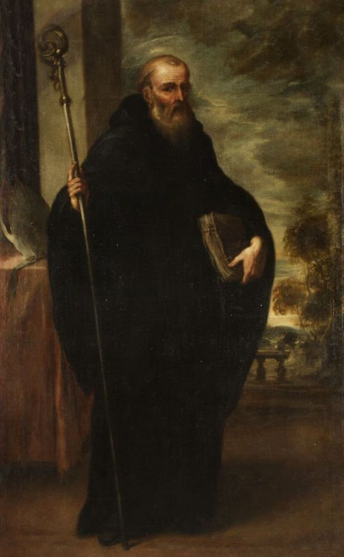

Paróquia São José
Iniciação Cristã · 2026
Veni, Creator Spiritus,
mentes tuorum visita,
imple superna gratia
quae tu creasti pectora.
↓ role para baixo
Santo de devoção da turma: São Bento de Núrsia — pai do monaquismo ocidental e nosso intercessor
Avisos
Retomamos os nossos encontros no 2º semestre de 2026: são 16 encontros, de 12 de agosto a 25 de novembro. O semestre tem duas partes e uma articulação entre elas — a primeira pergunta o que devemos fazer; a segunda, de onde vem a força para fazer.
Parte I · a lei que obriga
Da moral fundamental — vocação, liberdade, consciência, virtude — até o Decálogo, mandamento por mandamento.
Parte II · a graça que capacita
Se a Lei Nova é graça, a pergunta seguinte é por onde essa graça chega — e a resposta são os sacramentos.
Cronograma do semestre PDF · os 16 encontros, tema por tema"Não penseis que vim revogar a Lei ou os Profetas: não vim revogar, mas dar pleno cumprimento."
— Mt 5, 17
Agenda
Próximo passo
Cronograma em atualização Confira os encontros já divulgados abaixo.Os encontros são divulgados semana a semana: cada quinta-feira entra o encontro da quarta seguinte.
Local: Sala 204 · Horário: 20h
Local: Sala 204 · Horário: 20h
Local: Sala 204 · Horário: 20h
Local: Sala 204 · Horário: 20h
Local: Sala 204 · Horário: 20h
Local: Sala 204 · Horário: 20h
Local: Sala 204 · Horário: 20h
Local: Sala 204 · Horário: 20h
Local: Sala 204 · Horário: 20h
Local: Sala 204 · Horário: 20h
Local: Sala 204 · Horário: 20h
Local: Sala 204 · Horário: 20h
Local: Sala 204 · Horário: 20h
Local: Sala 204 · Horário: 20h
Abertura · Sala 204 · 20h às 22h
Moral fundamental · Sala 204 · 20h às 22h
1º e 2º Mandamentos · Sala 204 · 20h às 22h
3º e 4º Mandamentos · Sala 204 · 20h às 22h
5º Mandamento · Sala 204 · 20h às 22h
6º e 9º Mandamentos · Sala 204 · 20h às 22h
7º Mandamento · Sala 204 · 20h às 22h
8º e 10º Mandamentos · Sala 204 · 20h às 22h
Ponte entre as duas partes · Sala 204 · 20h às 22h
Economia sacramental · Sala 204 · 20h às 22h
Iniciação Cristã · I · Sala 204 · 20h às 22h
Iniciação Cristã · II · Sala 204 · 20h às 22h
Fonte e ápice · Sala 204 · 20h às 22h
Sacramentos de cura · Sala 204 · 20h às 22h
Sacramentos de serviço · Sala 204 · 20h às 22h
Confraternização · Sala 204 · 20h às 22h
Preparação
Informações
Aviso
Voltamos com um Kahoot de revisão do que estudamos no módulo anterior — Credo, Mariologia e os artigos da fé — e a apresentação do cronograma do semestre. Que alegria recomeçar!
Pedro
Lembrete
São 16 encontros na Sala 204, de 12 de agosto a 25 de novembro. O cronograma completo já está disponível em PDF no início desta página.
Fiquem atentos!
Santo da Turma

Nascido por volta de 480 d.C. em Núrsia, no centro da Itália, Bento era filho de família nobre e foi enviado jovem a Roma para estudar. Desolado com a corrupção moral da cidade, abandonou tudo e retirou-se para o deserto de Subiaco, onde viveu como eremita durante três anos em busca de Deus.
Sua santidade atraiu discípulos, e Bento acabou fundando doze pequenas comunidades monásticas, até se estabelecer definitivamente em Monte Cassino, onde escreveu sua célebre Regra — um guia de vida comunitária fundado na oração, no trabalho e na obediência, resumido no lema "Ora et Labora" (Ora e Trabalha).
A Regra de São Bento tornou-se a espinha dorsal do monaquismo ocidental e moldou profundamente a civilização europeia cristã. São Bento é chamado de Pai do Monaquismo Ocidental e foi proclamado Patrono da Europa pelo Papa Paulo VI em 1964. Sua festa é celebrada em 11 de julho.
"Nada absolutamente anteponhas ao amor de Cristo."
— São Bento, Regra, Cap. IV
Acesse como aplicativo no seu celular — funciona até sem internet.
No iPhone (Safari)